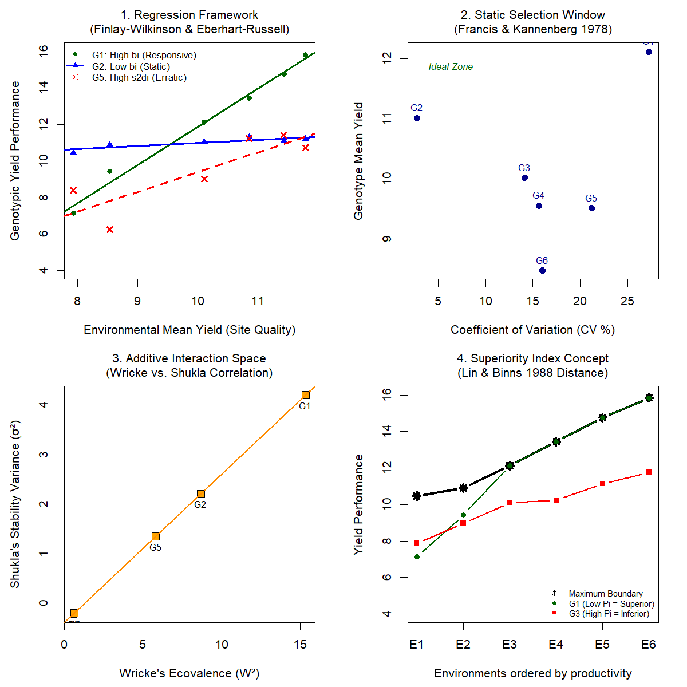

Module 3
Classical GxE Stability Compendium
Contrasting mathematical logic behind stability parameters:
- 1. Regression Framework Finlay-Wilkinson & Eberhart-Russell evaluate sensitivity slope (bi) and residual deviation (s2di). Racehorses show bi > 1, static types show bi -> 0.
- 2. Static Selection Window Francis & Kannenberg use Coefficient of Variation (CV) vs. Mean. The ideal genotype exists in the top-left quadrant (high yield, low CV).
- 3. Additive Interaction Space Wricke's Ecovalence and Shukla's Stability Variance measure identical structural deviations.
- 4. Superiority Index Lin & Binns distance penalizes genotypes that drop below the maximum yield at any site, optimizing for distance to the frontier.
